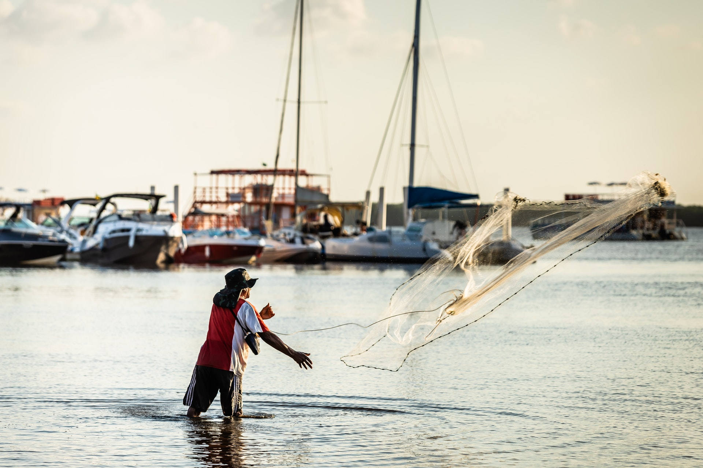
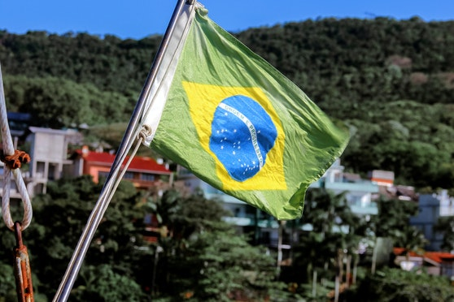
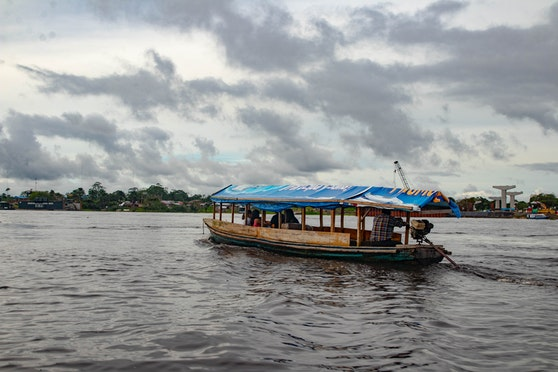
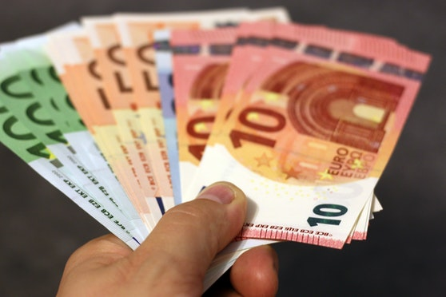

Promove a proteção da fauna marinha
As atividades da pesca sustentável são totalmente adequadas aos ritmos que os peixes precisam para se reproduzirem, promovendo a proteção da fauna marinha
Evita ao máximo qualquer tipo de desperdício
Os peixes e espécies são aproveitadas ao máximo, e graças à certificações como a MSC, é possível o monitormaneto constante.
Poluição reduzida
Além de reduzir a produção de resíduos poluentes, essa pesca sustentável também reduz o uso de produtos químicos.
Noticias
Extinção
Ficaremos sem peixes em nosso cardápio em 2048
De acordo com a ONG World Wildlife Fund (WWF), se a pesca excessiva continuar, espera-se que os peixes desapareçam dos nossos cardápios até 2048.Segundo a organização, a frota pesqueira global é duas a três vezes maior do que os oceanos suportam de forma sustentável. Isso significa que estamos capturando...

brasil
Estudo da Auditoria de pesca aponta que pesca no Brasil continua sendo feita “no escuro”
Nenhum dos Comitês Permanentes de Gestão da Pesca e do Uso Sustentável dos Recursos Pesqueiros (CPG) está em funcionamento hoje no Brasil...

brasil
Banco Mundial mira expandir acordos sobre pesca sustentável na Amazônia
O Banco Mundial quer fazer chegar o Projeto Paisagens Sustentáveis da Amazônia a mais 10 comunidades da região...

Economia
Pesca sustentável e conservação dos oceanos recebem um incentivo de 1 milhão de euros
Um total de 860 mil euros, sob a forma de 22 subvenções, que oscilam entre seis mil e 62 mil euros cada, é concedido a pescarias, cientistas, organizações não governamentais e estudantes de 12 países, para ajudar os esforços internacionais em matéria de conservação marinha e pesca sustentável...
